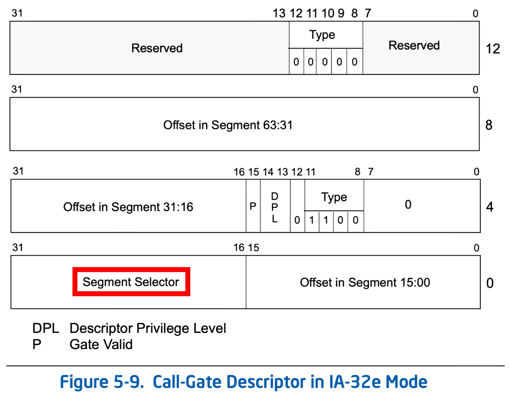

Call Gate Descriptor (call gates are not in use since about win95)



About the figure:
The far pointer to the call gate must contain an offset but it is not used.
The CALL instruction uses the segment selector to address a segment descriptor (which is a call-gate descriptor) from GDT or LDT.
That call-gate descriptor contains another segment selector to select another segment descriptor from the GDT or LDT.
The base address from the later descriptor and the offset from the call-gate descriptor are combined to find the entry point.